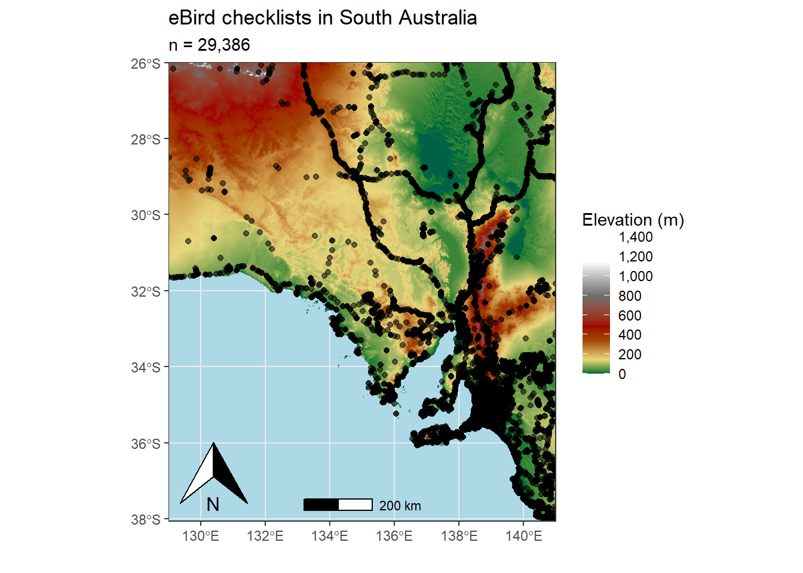

library(tidyverse) #tidy data/wrangling
library(auk) #eBird data wrangling
library(ebirdst) #spatiotemporal subsampling
library(mccf1) # modelling
library(ranger) #modelling
library(scam) #modelling
library(sf) #spatial data operations
library(terra) #raster data operations
library(tidyterra) #raster plotting
library(scales) # pretty scales
library(paletteer) # colours for plottingThroughout the time that I’ve been undertaking my PhD I’ve gained skills in data science and statistical programming, particularly with the language R. I started learning R during my Honours year, but have been able to hone my skills during the PhD in terms of the complexity and scope of use. Although daunting at times, learning to code has been the most enjoyable part of my PhD and something that I look forward to hopefully doing as part of a job sometime in the future!
In this article I’m going to estimate the encounter rate of the Wedge-tailed Eagle in South Australia during the breeding season using data from the community science platform, eBird. This platform boasts a staggering 1.3 billion records of birds across the globe, and is an invaluable conservation resource to study bird populations and how they change across time and space. I decided on the Wedge-tailed Eagle, because as a birder that specifically studies raptors, you can’t get much cooler than an Eagle!
This analysis largely follows the work of Matt Strimas-Mackey and the wonderful work that he and the eBird team at Cornell University in America put together in the form of a best practices guide when working with eBird data. This has been an extremely helpful resource throughout my PhD and I couldn’t have done a few of my chapters without it! Here is a link to the resource: https://ebird.github.io/ebird-best-practices/
Enough chit chat, lets get to the analysis!
First up, lets load the packages and data required for the analysis.
# set random number seed to ensure fully repeatable results
set.seed(1)
# habitat variables: landcover and elevation
habitat <- read_csv(here::here("data/WTE_Analysis/WTE_environmental-variables_checklists.csv"))
# zero-filled ebird data combined with habitat data
checklists <- read_csv(here::here("data/WTE_Analysis/eBird_WedgeTailedEagle_zf_SA.csv")) %>%
inner_join(habitat, by = "checklist_id") %>%
#subset to breeding season months
dplyr::mutate(month = month(observation_date)) %>%
dplyr::filter(month %in% c(6, 7, 8, 9, 10, 11, 12))
# prediction grid
pred_grid <- read_csv(here::here("data/WTE_Analysis/WTE_environmental-variables_prediction-grid.csv"))
r <- rast(here::here("data/WTE_Analysis/WTE_prediction-grid.tif"))
crs <- st_crs(r)Lets also load in a shapefile of South Australia so that we can make pretty looking maps of our predictions.
SA <- read_sf(here::here("data/WTE_Analysis/South_Australia.shp"))Data within community science programs are often subject to spatial and temporal biases, as well as large class imbalances. Australia represents a fantastic example of spatial sampling bias, as illustrated below by the figure. The majority of eBird checklists fall into coastal areas where people live, instead of being evenly distributed across the landscape. Checklists also follow things like roads, which is evident by the line of checklists spanning the Stuart Highway from mid-South Australia up to the Northern Territory. People are usually more available on weekends to contribute to community science projects, and there are studies that document this ‘Weekend effect’ (see here). And lastly, there are usually many more non-detections than detection present for many species within the eBird dataset, leading to class imbalance. To minimise these biases, we will perform spatiotemporal subsampling to the data by selecting a checklist for every week of the available data within a defined 3x3 km grid cell.
class : SpatRaster
dimensions : 1448, 1440, 1 (nrow, ncol, nlyr)
resolution : 0.008333333, 0.008333333 (x, y)
extent : 129, 141, -38.06667, -26 (xmin, xmax, ymin, ymax)
coord. ref. : lon/lat WGS 84 (EPSG:4326)
source : elevation_SA.tif
name : elevation_1KMmd_GMTEDmd
min value : -14.0
max value : 1358.5 
Before we subsample the data, we will split the data into a testing and training set. We will use 80% of the data to train the model, and the remaining 20% to test it.
checklists <- checklists %>%
mutate(type = if_else(runif(nrow(.)) <= 0.8, "train", "test"))
table(checklists$type) / nrow(checklists)
test train
0.2010141 0.7989859 Now we subsample the data.
# sample one checklist per 3km x 3km x 1 week grid for each year
# sample detection/non-detection independently
checklists_ss <- grid_sample_stratified(checklists,
obs_column = "species_observed",
sample_by = "type")We will hold the training data separate and select the predictors for the model.
checklists_train <- checklists_ss %>%
filter(type == "train") %>%
# select only the columns to be used in the model
select(species_observed, observation_count,
year, day_of_year, hours_of_day,
effort_hours, effort_distance_km, effort_speed_kmph,
number_observers,
starts_with("pland_"),
starts_with("ed_"),
starts_with("elevation_"))Now we are ready to model the data! We will use a random forest model to achieve a prediction for the encounter rate of Wedge-tailed Eagles across South Australia. This is a classification model that will measure the probability of an eBirder encountering a species, in our case a Wedge-tailed Eagle, on a standard eBird checklist (undefined.undefinedundefined